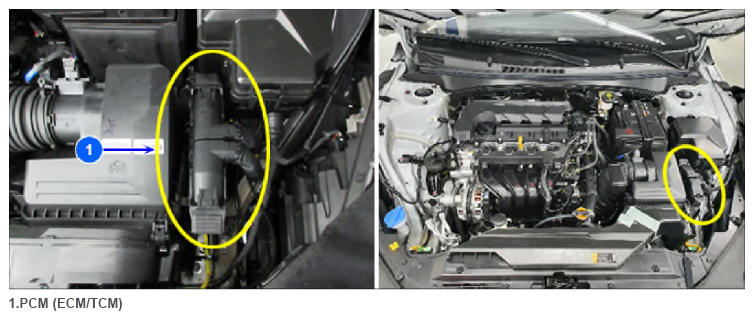

Pcm (ECM/TCM)
 Courtesy of HYUNDAI MOTOR AMERICA
|
The A/C control unit (module) receives the engine RPM signals from the engine ECU through CAN communication lines and carries out variable control over the compressor according to the engine loads.